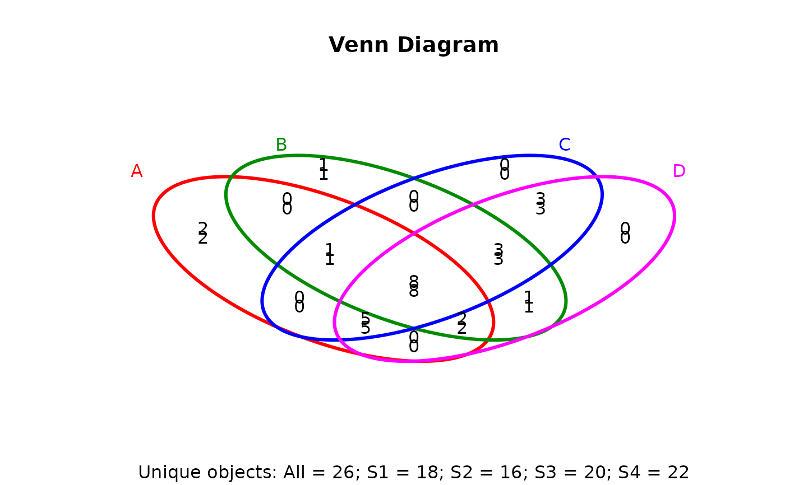
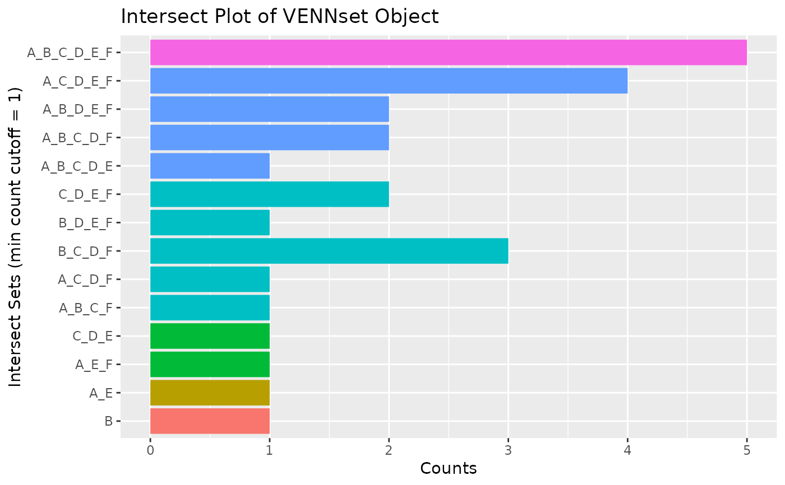
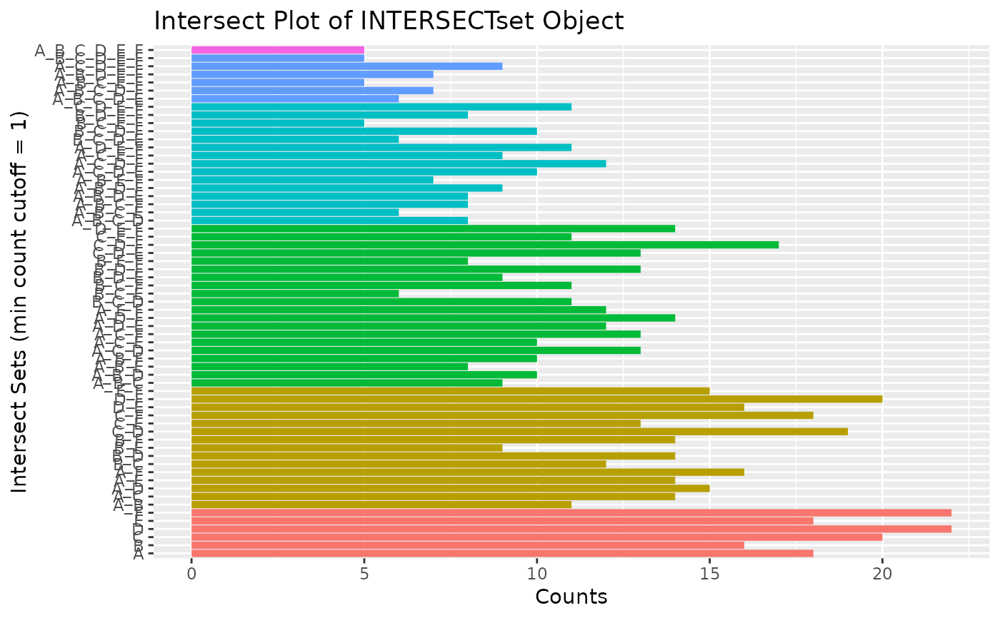

Set Intersect and Venn Diagram Functions
overLapper.RdFunction for computing Venn intersects or standard intersects among large
numbers of label sets provided as list of vectors. The resulting
intersect objects can be used for plotting 2-5 way Venn diagrams or intersect
bar plots using the functions vennPlot or olBarplot, respectively.
The overLapper function scales to 2-20 or more label vectors for Venn
intersect calculations and to much larger sample numbers for standard
intersects. The different intersect types are explained below under the
definition of the type argument. The upper Venn limit around 20 label
sets is unavoidable because the complexity of Venn intersects increases
exponentially with the label set number n according to this
relationship: 2^n - 1. The current implementation of
the plotting function vennPlot supports Venn diagrams for 2-5 label
sets. To visually analyze larger numbers of label sets, a variety of intersect
methods are introduced in the olBarplot help file. These methods are
much more scalable than Venn diagrams, but lack their restrictive intersect
logic.
overLapper(setlist, complexity = "default", sep = "_", cleanup = FALSE, keepdups = FALSE, type)
Arguments
| setlist | Object of class |
|---|---|
| complexity | Complexity level of intersects specified as integer vector. For Venn intersects
it needs to be assigned |
| sep | Character used to separate set labels. |
| cleanup | If set to |
| keepdups | By default all duplicates are removed from the label sets. The setting
|
| type | With the default setting |
Details
Additional Venn diagram resources are provided by the packages limma,
gplots, vennerable, eVenn and VennDiagram, or
online resources such as shapes, Venn Diagram Generator and Venny.
Value
overLapper returns standard intersect and Venn intersect results as
INTERSECTset or VENNset objects, respectively. These S4 objects
contain the following components:
Original label sets accessible with setlist().
Present-absent matrix accessible with intersectmatrix(),
where each overlap set in the vennlist data component is labeled according to
the label set names provided under setlist. For instance, the composite name
'ABC' indicates that the entries are restricted to A, B and C. The seperator used
for naming the intersect sets can be specified under the sep argument.
Complexity levels accessible with complexitylevels().
Venn intersects for VENNset objects accessible with vennlist().
Standard intersects for INTERSECTset objects accessible with intersectlist().
References
See examples in 'The Electronic Journal of Combinatorics': http://www.combinatorics.org/files/Surveys/ds5/VennSymmExamples.html
Author
Thomas Girke
Note
The functions provided here are an extension of the Venn diagram resources on this site: http://manuals.bioinformatics.ucr.edu/home/R_BioCondManual#TOC-Venn-Diagrams
See also
vennPlot, olBarplot
Examples
## Sample data setlist <- list(A=sample(letters, 18), B=sample(letters, 16), C=sample(letters, 20), D=sample(letters, 22), E=sample(letters, 18), F=sample(letters, 22)) ## 2-way Venn diagram vennset <- overLapper(setlist[1:2], type="vennsets") vennPlot(vennset)## 4-way Venn diagram vennset <- overLapper(setlist[1:4], type="vennsets") vennPlot(list(vennset, vennset))## Alternative Venn count input to vennPlot (not recommended!) counts <- sapply(vennlist(vennset), length) vennPlot(counts)## 6-way Venn comparison as bar plot vennset <- overLapper(setlist[1:6], type="vennsets") olBarplot(vennset, mincount=1)## Bar plot of standard intersect counts interset <- overLapper(setlist, type="intersects") olBarplot(interset, mincount=1)#> [1] "setlist" "intersectmatrix" "complexitylevels" "vennlist"#> [1] "setlist" "intersectmatrix" "complexitylevels" "intersectlist"setlist(vennset)#> $A #> [1] "p" "g" "k" "z" "m" "i" "q" "l" "n" "j" "v" "w" "a" "o" "x" "t" "e" "s" #> #> $B #> [1] "k" "p" "g" "w" "y" "e" "f" "r" "l" "o" "s" "u" "q" "m" "a" "n" #> #> $C #> [1] "i" "d" "k" "n" "v" "c" "s" "a" "h" "e" "z" "y" "u" "p" "j" "m" "t" "r" "x" #> [20] "f" #> #> $D #> [1] "j" "f" "h" "c" "e" "p" "q" "n" "i" "y" "a" "k" "w" "o" "u" "r" "l" "b" "v" #> [20] "x" "m" "t" #> #> $E #> [1] "p" "q" "d" "i" "m" "a" "b" "c" "r" "y" "h" "w" "v" "g" "e" "t" "n" "j" #> #> $F #> [1] "j" "r" "d" "p" "b" "k" "h" "t" "y" "x" "e" "n" "s" "m" "w" "o" "q" "f" "g" #> [20] "l" "z" "c" #>intersectmatrix(vennset)#> A B C D E F #> a 1 1 1 1 1 0 #> b 0 0 0 1 1 1 #> c 0 0 1 1 1 1 #> d 0 0 1 0 1 1 #> e 1 1 1 1 1 1 #> f 0 1 1 1 0 1 #> g 1 1 0 0 1 1 #> h 0 0 1 1 1 1 #> i 1 0 1 1 1 0 #> j 1 0 1 1 1 1 #> k 1 1 1 1 0 1 #> l 1 1 0 1 0 1 #> m 1 1 1 1 1 1 #> n 1 1 1 1 1 1 #> o 1 1 0 1 0 1 #> p 1 1 1 1 1 1 #> q 1 1 0 1 1 1 #> r 0 1 1 1 1 1 #> s 1 1 1 0 0 1 #> t 1 0 1 1 1 1 #> u 0 1 1 1 0 0 #> v 1 0 1 1 1 0 #> w 1 1 0 1 1 1 #> x 1 0 1 1 0 1 #> y 0 1 1 1 1 1 #> z 1 0 1 0 0 1complexitylevels(vennset)#> [1] 1 1 1 1 1 1 2 2 2 2 2 2 2 2 2 2 2 2 2 2 2 3 3 3 3 3 3 3 3 3 3 3 3 3 3 3 3 3 #> [39] 3 3 3 4 4 4 4 4 4 4 4 4 4 4 4 4 4 4 5 5 5 5 5 5 6vennlist(vennset)#> $A #> character(0) #> #> $B #> character(0) #> #> $C #> character(0) #> #> $D #> character(0) #> #> $E #> character(0) #> #> $F #> character(0) #> #> $A_B #> character(0) #> #> $A_C #> character(0) #> #> $A_D #> character(0) #> #> $A_E #> character(0) #> #> $A_F #> character(0) #> #> $B_C #> character(0) #> #> $B_D #> character(0) #> #> $B_E #> character(0) #> #> $B_F #> character(0) #> #> $C_D #> character(0) #> #> $C_E #> character(0) #> #> $C_F #> character(0) #> #> $D_E #> character(0) #> #> $D_F #> character(0) #> #> $E_F #> character(0) #> #> $A_B_C #> character(0) #> #> $A_B_D #> character(0) #> #> $A_B_E #> character(0) #> #> $A_B_F #> character(0) #> #> $A_C_D #> character(0) #> #> $A_C_E #> character(0) #> #> $A_C_F #> [1] "z" #> #> $A_D_E #> character(0) #> #> $A_D_F #> character(0) #> #> $A_E_F #> character(0) #> #> $B_C_D #> [1] "u" #> #> $B_C_E #> character(0) #> #> $B_C_F #> character(0) #> #> $B_D_E #> character(0) #> #> $B_D_F #> character(0) #> #> $B_E_F #> character(0) #> #> $C_D_E #> character(0) #> #> $C_D_F #> character(0) #> #> $C_E_F #> [1] "d" #> #> $D_E_F #> [1] "b" #> #> $A_B_C_D #> character(0) #> #> $A_B_C_E #> character(0) #> #> $A_B_C_F #> [1] "s" #> #> $A_B_D_E #> character(0) #> #> $A_B_D_F #> [1] "l" "o" #> #> $A_B_E_F #> [1] "g" #> #> $A_C_D_E #> [1] "i" "v" #> #> $A_C_D_F #> [1] "x" #> #> $A_C_E_F #> character(0) #> #> $A_D_E_F #> character(0) #> #> $B_C_D_E #> character(0) #> #> $B_C_D_F #> [1] "f" #> #> $B_C_E_F #> character(0) #> #> $B_D_E_F #> character(0) #> #> $C_D_E_F #> [1] "c" "h" #> #> $A_B_C_D_E #> [1] "a" #> #> $A_B_C_D_F #> [1] "k" #> #> $A_B_C_E_F #> character(0) #> #> $A_B_D_E_F #> [1] "q" "w" #> #> $A_C_D_E_F #> [1] "j" "t" #> #> $B_C_D_E_F #> [1] "r" "y" #> #> $A_B_C_D_E_F #> [1] "e" "m" "n" "p" #>intersectlist(interset)#> $A #> [1] "a" "e" "g" "i" "j" "k" "l" "m" "n" "o" "p" "q" "s" "t" "v" "w" "x" "z" #> #> $B #> [1] "a" "e" "f" "g" "k" "l" "m" "n" "o" "p" "q" "r" "s" "u" "w" "y" #> #> $C #> [1] "a" "c" "d" "e" "f" "h" "i" "j" "k" "m" "n" "p" "r" "s" "t" "u" "v" "x" "y" #> [20] "z" #> #> $D #> [1] "a" "b" "c" "e" "f" "h" "i" "j" "k" "l" "m" "n" "o" "p" "q" "r" "t" "u" "v" #> [20] "w" "x" "y" #> #> $E #> [1] "a" "b" "c" "d" "e" "g" "h" "i" "j" "m" "n" "p" "q" "r" "t" "v" "w" "y" #> #> $F #> [1] "b" "c" "d" "e" "f" "g" "h" "j" "k" "l" "m" "n" "o" "p" "q" "r" "s" "t" "w" #> [20] "x" "y" "z" #> #> $A_B #> [1] "a" "e" "g" "k" "l" "m" "n" "o" "p" "q" "s" "w" #> #> $A_C #> [1] "a" "e" "i" "j" "k" "m" "n" "p" "s" "t" "v" "x" "z" #> #> $A_D #> [1] "a" "e" "i" "j" "k" "l" "m" "n" "o" "p" "q" "t" "v" "w" "x" #> #> $A_E #> [1] "a" "e" "g" "i" "j" "m" "n" "p" "q" "t" "v" "w" #> #> $A_F #> [1] "e" "g" "j" "k" "l" "m" "n" "o" "p" "q" "s" "t" "w" "x" "z" #> #> $B_C #> [1] "a" "e" "f" "k" "m" "n" "p" "r" "s" "u" "y" #> #> $B_D #> [1] "a" "e" "f" "k" "l" "m" "n" "o" "p" "q" "r" "u" "w" "y" #> #> $B_E #> [1] "a" "e" "g" "m" "n" "p" "q" "r" "w" "y" #> #> $B_F #> [1] "e" "f" "g" "k" "l" "m" "n" "o" "p" "q" "r" "s" "w" "y" #> #> $C_D #> [1] "a" "c" "e" "f" "h" "i" "j" "k" "m" "n" "p" "r" "t" "u" "v" "x" "y" #> #> $C_E #> [1] "a" "c" "d" "e" "h" "i" "j" "m" "n" "p" "r" "t" "v" "y" #> #> $C_F #> [1] "c" "d" "e" "f" "h" "j" "k" "m" "n" "p" "r" "s" "t" "x" "y" "z" #> #> $D_E #> [1] "a" "b" "c" "e" "h" "i" "j" "m" "n" "p" "q" "r" "t" "v" "w" "y" #> #> $D_F #> [1] "b" "c" "e" "f" "h" "j" "k" "l" "m" "n" "o" "p" "q" "r" "t" "w" "x" "y" #> #> $E_F #> [1] "b" "c" "d" "e" "g" "h" "j" "m" "n" "p" "q" "r" "t" "w" "y" #> #> $A_B_C #> [1] "a" "e" "k" "m" "n" "p" "s" #> #> $A_B_D #> [1] "a" "e" "k" "l" "m" "n" "o" "p" "q" "w" #> #> $A_B_E #> [1] "a" "e" "g" "m" "n" "p" "q" "w" #> #> $A_B_F #> [1] "e" "g" "k" "l" "m" "n" "o" "p" "q" "s" "w" #> #> $A_C_D #> [1] "a" "e" "i" "j" "k" "m" "n" "p" "t" "v" "x" #> #> $A_C_E #> [1] "a" "e" "i" "j" "m" "n" "p" "t" "v" #> #> $A_C_F #> [1] "e" "j" "k" "m" "n" "p" "s" "t" "x" "z" #> #> $A_D_E #> [1] "a" "e" "i" "j" "m" "n" "p" "q" "t" "v" "w" #> #> $A_D_F #> [1] "e" "j" "k" "l" "m" "n" "o" "p" "q" "t" "w" "x" #> #> $A_E_F #> [1] "e" "g" "j" "m" "n" "p" "q" "t" "w" #> #> $B_C_D #> [1] "a" "e" "f" "k" "m" "n" "p" "r" "u" "y" #> #> $B_C_E #> [1] "a" "e" "m" "n" "p" "r" "y" #> #> $B_C_F #> [1] "e" "f" "k" "m" "n" "p" "r" "s" "y" #> #> $B_D_E #> [1] "a" "e" "m" "n" "p" "q" "r" "w" "y" #> #> $B_D_F #> [1] "e" "f" "k" "l" "m" "n" "o" "p" "q" "r" "w" "y" #> #> $B_E_F #> [1] "e" "g" "m" "n" "p" "q" "r" "w" "y" #> #> $C_D_E #> [1] "a" "c" "e" "h" "i" "j" "m" "n" "p" "r" "t" "v" "y" #> #> $C_D_F #> [1] "c" "e" "f" "h" "j" "k" "m" "n" "p" "r" "t" "x" "y" #> #> $C_E_F #> [1] "c" "d" "e" "h" "j" "m" "n" "p" "r" "t" "y" #> #> $D_E_F #> [1] "b" "c" "e" "h" "j" "m" "n" "p" "q" "r" "t" "w" "y" #> #> $A_B_C_D #> [1] "a" "e" "k" "m" "n" "p" #> #> $A_B_C_E #> [1] "a" "e" "m" "n" "p" #> #> $A_B_C_F #> [1] "e" "k" "m" "n" "p" "s" #> #> $A_B_D_E #> [1] "a" "e" "m" "n" "p" "q" "w" #> #> $A_B_D_F #> [1] "e" "k" "l" "m" "n" "o" "p" "q" "w" #> #> $A_B_E_F #> [1] "e" "g" "m" "n" "p" "q" "w" #> #> $A_C_D_E #> [1] "a" "e" "i" "j" "m" "n" "p" "t" "v" #> #> $A_C_D_F #> [1] "e" "j" "k" "m" "n" "p" "t" "x" #> #> $A_C_E_F #> [1] "e" "j" "m" "n" "p" "t" #> #> $A_D_E_F #> [1] "e" "j" "m" "n" "p" "q" "t" "w" #> #> $B_C_D_E #> [1] "a" "e" "m" "n" "p" "r" "y" #> #> $B_C_D_F #> [1] "e" "f" "k" "m" "n" "p" "r" "y" #> #> $B_C_E_F #> [1] "e" "m" "n" "p" "r" "y" #> #> $B_D_E_F #> [1] "e" "m" "n" "p" "q" "r" "w" "y" #> #> $C_D_E_F #> [1] "c" "e" "h" "j" "m" "n" "p" "r" "t" "y" #> #> $A_B_C_D_E #> [1] "a" "e" "m" "n" "p" #> #> $A_B_C_D_F #> [1] "e" "k" "m" "n" "p" #> #> $A_B_C_E_F #> [1] "e" "m" "n" "p" #> #> $A_B_D_E_F #> [1] "e" "m" "n" "p" "q" "w" #> #> $A_C_D_E_F #> [1] "e" "j" "m" "n" "p" "t" #> #> $B_C_D_E_F #> [1] "e" "m" "n" "p" "r" "y" #> #> $A_B_C_D_E_F #> [1] "e" "m" "n" "p" #>#> $setlist #> $setlist$A #> [1] "p" "g" "k" "z" "m" "i" "q" "l" "n" "j" "v" "w" "a" "o" "x" "t" "e" "s" #> #> $setlist$B #> [1] "k" "p" "g" "w" "y" "e" "f" "r" "l" "o" "s" "u" "q" "m" "a" "n" #> #> $setlist$C #> [1] "i" "d" "k" "n" "v" "c" "s" "a" "h" "e" "z" "y" "u" "p" "j" "m" "t" "r" "x" #> [20] "f" #> #> $setlist$D #> [1] "j" "f" "h" "c" "e" "p" "q" "n" "i" "y" "a" "k" "w" "o" "u" "r" "l" "b" "v" #> [20] "x" "m" "t" #> #> $setlist$E #> [1] "p" "q" "d" "i" "m" "a" "b" "c" "r" "y" "h" "w" "v" "g" "e" "t" "n" "j" #> #> $setlist$F #> [1] "j" "r" "d" "p" "b" "k" "h" "t" "y" "x" "e" "n" "s" "m" "w" "o" "q" "f" "g" #> [20] "l" "z" "c" #> #> #> $intersectmatrix #> A B C D E F #> a 1 1 1 1 1 0 #> b 0 0 0 1 1 1 #> c 0 0 1 1 1 1 #> d 0 0 1 0 1 1 #> e 1 1 1 1 1 1 #> f 0 1 1 1 0 1 #> g 1 1 0 0 1 1 #> h 0 0 1 1 1 1 #> i 1 0 1 1 1 0 #> j 1 0 1 1 1 1 #> k 1 1 1 1 0 1 #> l 1 1 0 1 0 1 #> m 1 1 1 1 1 1 #> n 1 1 1 1 1 1 #> o 1 1 0 1 0 1 #> p 1 1 1 1 1 1 #> q 1 1 0 1 1 1 #> r 0 1 1 1 1 1 #> s 1 1 1 0 0 1 #> t 1 0 1 1 1 1 #> u 0 1 1 1 0 0 #> v 1 0 1 1 1 0 #> w 1 1 0 1 1 1 #> x 1 0 1 1 0 1 #> y 0 1 1 1 1 1 #> z 1 0 1 0 0 1 #> #> $complexitylevels #> [1] 1 1 1 1 1 1 2 2 2 2 2 2 2 2 2 2 2 2 2 2 2 3 3 3 3 3 3 3 3 3 3 3 3 3 3 3 3 3 #> [39] 3 3 3 4 4 4 4 4 4 4 4 4 4 4 4 4 4 4 5 5 5 5 5 5 6 #> #> $vennlist #> $vennlist$A #> character(0) #> #> $vennlist$B #> character(0) #> #> $vennlist$C #> character(0) #> #> $vennlist$D #> character(0) #> #> $vennlist$E #> character(0) #> #> $vennlist$F #> character(0) #> #> $vennlist$A_B #> character(0) #> #> $vennlist$A_C #> character(0) #> #> $vennlist$A_D #> character(0) #> #> $vennlist$A_E #> character(0) #> #> $vennlist$A_F #> character(0) #> #> $vennlist$B_C #> character(0) #> #> $vennlist$B_D #> character(0) #> #> $vennlist$B_E #> character(0) #> #> $vennlist$B_F #> character(0) #> #> $vennlist$C_D #> character(0) #> #> $vennlist$C_E #> character(0) #> #> $vennlist$C_F #> character(0) #> #> $vennlist$D_E #> character(0) #> #> $vennlist$D_F #> character(0) #> #> $vennlist$E_F #> character(0) #> #> $vennlist$A_B_C #> character(0) #> #> $vennlist$A_B_D #> character(0) #> #> $vennlist$A_B_E #> character(0) #> #> $vennlist$A_B_F #> character(0) #> #> $vennlist$A_C_D #> character(0) #> #> $vennlist$A_C_E #> character(0) #> #> $vennlist$A_C_F #> [1] "z" #> #> $vennlist$A_D_E #> character(0) #> #> $vennlist$A_D_F #> character(0) #> #> $vennlist$A_E_F #> character(0) #> #> $vennlist$B_C_D #> [1] "u" #> #> $vennlist$B_C_E #> character(0) #> #> $vennlist$B_C_F #> character(0) #> #> $vennlist$B_D_E #> character(0) #> #> $vennlist$B_D_F #> character(0) #> #> $vennlist$B_E_F #> character(0) #> #> $vennlist$C_D_E #> character(0) #> #> $vennlist$C_D_F #> character(0) #> #> $vennlist$C_E_F #> [1] "d" #> #> $vennlist$D_E_F #> [1] "b" #> #> $vennlist$A_B_C_D #> character(0) #> #> $vennlist$A_B_C_E #> character(0) #> #> $vennlist$A_B_C_F #> [1] "s" #> #> $vennlist$A_B_D_E #> character(0) #> #> $vennlist$A_B_D_F #> [1] "l" "o" #> #> $vennlist$A_B_E_F #> [1] "g" #> #> $vennlist$A_C_D_E #> [1] "i" "v" #> #> $vennlist$A_C_D_F #> [1] "x" #> #> $vennlist$A_C_E_F #> character(0) #> #> $vennlist$A_D_E_F #> character(0) #> #> $vennlist$B_C_D_E #> character(0) #> #> $vennlist$B_C_D_F #> [1] "f" #> #> $vennlist$B_C_E_F #> character(0) #> #> $vennlist$B_D_E_F #> character(0) #> #> $vennlist$C_D_E_F #> [1] "c" "h" #> #> $vennlist$A_B_C_D_E #> [1] "a" #> #> $vennlist$A_B_C_D_F #> [1] "k" #> #> $vennlist$A_B_C_E_F #> character(0) #> #> $vennlist$A_B_D_E_F #> [1] "q" "w" #> #> $vennlist$A_C_D_E_F #> [1] "j" "t" #> #> $vennlist$B_C_D_E_F #> [1] "r" "y" #> #> $vennlist$A_B_C_D_E_F #> [1] "e" "m" "n" "p" #> #>#> $setlist #> $setlist$A #> [1] "p" "g" "k" "z" "m" "i" "q" "l" "n" "j" "v" "w" "a" "o" "x" "t" "e" "s" #> #> $setlist$B #> [1] "k" "p" "g" "w" "y" "e" "f" "r" "l" "o" "s" "u" "q" "m" "a" "n" #> #> $setlist$C #> [1] "i" "d" "k" "n" "v" "c" "s" "a" "h" "e" "z" "y" "u" "p" "j" "m" "t" "r" "x" #> [20] "f" #> #> $setlist$D #> [1] "j" "f" "h" "c" "e" "p" "q" "n" "i" "y" "a" "k" "w" "o" "u" "r" "l" "b" "v" #> [20] "x" "m" "t" #> #> $setlist$E #> [1] "p" "q" "d" "i" "m" "a" "b" "c" "r" "y" "h" "w" "v" "g" "e" "t" "n" "j" #> #> $setlist$F #> [1] "j" "r" "d" "p" "b" "k" "h" "t" "y" "x" "e" "n" "s" "m" "w" "o" "q" "f" "g" #> [20] "l" "z" "c" #> #> #> $intersectmatrix #> A B C D E F #> a 1 1 1 1 1 0 #> b 0 0 0 1 1 1 #> c 0 0 1 1 1 1 #> d 0 0 1 0 1 1 #> e 1 1 1 1 1 1 #> f 0 1 1 1 0 1 #> g 1 1 0 0 1 1 #> h 0 0 1 1 1 1 #> i 1 0 1 1 1 0 #> j 1 0 1 1 1 1 #> k 1 1 1 1 0 1 #> l 1 1 0 1 0 1 #> m 1 1 1 1 1 1 #> n 1 1 1 1 1 1 #> o 1 1 0 1 0 1 #> p 1 1 1 1 1 1 #> q 1 1 0 1 1 1 #> r 0 1 1 1 1 1 #> s 1 1 1 0 0 1 #> t 1 0 1 1 1 1 #> u 0 1 1 1 0 0 #> v 1 0 1 1 1 0 #> w 1 1 0 1 1 1 #> x 1 0 1 1 0 1 #> y 0 1 1 1 1 1 #> z 1 0 1 0 0 1 #> #> $complexitylevels #> [1] 1 1 1 1 1 1 2 2 2 2 2 2 2 2 2 2 2 2 2 2 2 3 3 3 3 3 3 3 3 3 3 3 3 3 3 3 3 3 #> [39] 3 3 3 4 4 4 4 4 4 4 4 4 4 4 4 4 4 4 5 5 5 5 5 5 6 #> #> $intersectlist #> $intersectlist$A #> [1] "a" "e" "g" "i" "j" "k" "l" "m" "n" "o" "p" "q" "s" "t" "v" "w" "x" "z" #> #> $intersectlist$B #> [1] "a" "e" "f" "g" "k" "l" "m" "n" "o" "p" "q" "r" "s" "u" "w" "y" #> #> $intersectlist$C #> [1] "a" "c" "d" "e" "f" "h" "i" "j" "k" "m" "n" "p" "r" "s" "t" "u" "v" "x" "y" #> [20] "z" #> #> $intersectlist$D #> [1] "a" "b" "c" "e" "f" "h" "i" "j" "k" "l" "m" "n" "o" "p" "q" "r" "t" "u" "v" #> [20] "w" "x" "y" #> #> $intersectlist$E #> [1] "a" "b" "c" "d" "e" "g" "h" "i" "j" "m" "n" "p" "q" "r" "t" "v" "w" "y" #> #> $intersectlist$F #> [1] "b" "c" "d" "e" "f" "g" "h" "j" "k" "l" "m" "n" "o" "p" "q" "r" "s" "t" "w" #> [20] "x" "y" "z" #> #> $intersectlist$A_B #> [1] "a" "e" "g" "k" "l" "m" "n" "o" "p" "q" "s" "w" #> #> $intersectlist$A_C #> [1] "a" "e" "i" "j" "k" "m" "n" "p" "s" "t" "v" "x" "z" #> #> $intersectlist$A_D #> [1] "a" "e" "i" "j" "k" "l" "m" "n" "o" "p" "q" "t" "v" "w" "x" #> #> $intersectlist$A_E #> [1] "a" "e" "g" "i" "j" "m" "n" "p" "q" "t" "v" "w" #> #> $intersectlist$A_F #> [1] "e" "g" "j" "k" "l" "m" "n" "o" "p" "q" "s" "t" "w" "x" "z" #> #> $intersectlist$B_C #> [1] "a" "e" "f" "k" "m" "n" "p" "r" "s" "u" "y" #> #> $intersectlist$B_D #> [1] "a" "e" "f" "k" "l" "m" "n" "o" "p" "q" "r" "u" "w" "y" #> #> $intersectlist$B_E #> [1] "a" "e" "g" "m" "n" "p" "q" "r" "w" "y" #> #> $intersectlist$B_F #> [1] "e" "f" "g" "k" "l" "m" "n" "o" "p" "q" "r" "s" "w" "y" #> #> $intersectlist$C_D #> [1] "a" "c" "e" "f" "h" "i" "j" "k" "m" "n" "p" "r" "t" "u" "v" "x" "y" #> #> $intersectlist$C_E #> [1] "a" "c" "d" "e" "h" "i" "j" "m" "n" "p" "r" "t" "v" "y" #> #> $intersectlist$C_F #> [1] "c" "d" "e" "f" "h" "j" "k" "m" "n" "p" "r" "s" "t" "x" "y" "z" #> #> $intersectlist$D_E #> [1] "a" "b" "c" "e" "h" "i" "j" "m" "n" "p" "q" "r" "t" "v" "w" "y" #> #> $intersectlist$D_F #> [1] "b" "c" "e" "f" "h" "j" "k" "l" "m" "n" "o" "p" "q" "r" "t" "w" "x" "y" #> #> $intersectlist$E_F #> [1] "b" "c" "d" "e" "g" "h" "j" "m" "n" "p" "q" "r" "t" "w" "y" #> #> $intersectlist$A_B_C #> [1] "a" "e" "k" "m" "n" "p" "s" #> #> $intersectlist$A_B_D #> [1] "a" "e" "k" "l" "m" "n" "o" "p" "q" "w" #> #> $intersectlist$A_B_E #> [1] "a" "e" "g" "m" "n" "p" "q" "w" #> #> $intersectlist$A_B_F #> [1] "e" "g" "k" "l" "m" "n" "o" "p" "q" "s" "w" #> #> $intersectlist$A_C_D #> [1] "a" "e" "i" "j" "k" "m" "n" "p" "t" "v" "x" #> #> $intersectlist$A_C_E #> [1] "a" "e" "i" "j" "m" "n" "p" "t" "v" #> #> $intersectlist$A_C_F #> [1] "e" "j" "k" "m" "n" "p" "s" "t" "x" "z" #> #> $intersectlist$A_D_E #> [1] "a" "e" "i" "j" "m" "n" "p" "q" "t" "v" "w" #> #> $intersectlist$A_D_F #> [1] "e" "j" "k" "l" "m" "n" "o" "p" "q" "t" "w" "x" #> #> $intersectlist$A_E_F #> [1] "e" "g" "j" "m" "n" "p" "q" "t" "w" #> #> $intersectlist$B_C_D #> [1] "a" "e" "f" "k" "m" "n" "p" "r" "u" "y" #> #> $intersectlist$B_C_E #> [1] "a" "e" "m" "n" "p" "r" "y" #> #> $intersectlist$B_C_F #> [1] "e" "f" "k" "m" "n" "p" "r" "s" "y" #> #> $intersectlist$B_D_E #> [1] "a" "e" "m" "n" "p" "q" "r" "w" "y" #> #> $intersectlist$B_D_F #> [1] "e" "f" "k" "l" "m" "n" "o" "p" "q" "r" "w" "y" #> #> $intersectlist$B_E_F #> [1] "e" "g" "m" "n" "p" "q" "r" "w" "y" #> #> $intersectlist$C_D_E #> [1] "a" "c" "e" "h" "i" "j" "m" "n" "p" "r" "t" "v" "y" #> #> $intersectlist$C_D_F #> [1] "c" "e" "f" "h" "j" "k" "m" "n" "p" "r" "t" "x" "y" #> #> $intersectlist$C_E_F #> [1] "c" "d" "e" "h" "j" "m" "n" "p" "r" "t" "y" #> #> $intersectlist$D_E_F #> [1] "b" "c" "e" "h" "j" "m" "n" "p" "q" "r" "t" "w" "y" #> #> $intersectlist$A_B_C_D #> [1] "a" "e" "k" "m" "n" "p" #> #> $intersectlist$A_B_C_E #> [1] "a" "e" "m" "n" "p" #> #> $intersectlist$A_B_C_F #> [1] "e" "k" "m" "n" "p" "s" #> #> $intersectlist$A_B_D_E #> [1] "a" "e" "m" "n" "p" "q" "w" #> #> $intersectlist$A_B_D_F #> [1] "e" "k" "l" "m" "n" "o" "p" "q" "w" #> #> $intersectlist$A_B_E_F #> [1] "e" "g" "m" "n" "p" "q" "w" #> #> $intersectlist$A_C_D_E #> [1] "a" "e" "i" "j" "m" "n" "p" "t" "v" #> #> $intersectlist$A_C_D_F #> [1] "e" "j" "k" "m" "n" "p" "t" "x" #> #> $intersectlist$A_C_E_F #> [1] "e" "j" "m" "n" "p" "t" #> #> $intersectlist$A_D_E_F #> [1] "e" "j" "m" "n" "p" "q" "t" "w" #> #> $intersectlist$B_C_D_E #> [1] "a" "e" "m" "n" "p" "r" "y" #> #> $intersectlist$B_C_D_F #> [1] "e" "f" "k" "m" "n" "p" "r" "y" #> #> $intersectlist$B_C_E_F #> [1] "e" "m" "n" "p" "r" "y" #> #> $intersectlist$B_D_E_F #> [1] "e" "m" "n" "p" "q" "r" "w" "y" #> #> $intersectlist$C_D_E_F #> [1] "c" "e" "h" "j" "m" "n" "p" "r" "t" "y" #> #> $intersectlist$A_B_C_D_E #> [1] "a" "e" "m" "n" "p" #> #> $intersectlist$A_B_C_D_F #> [1] "e" "k" "m" "n" "p" #> #> $intersectlist$A_B_C_E_F #> [1] "e" "m" "n" "p" #> #> $intersectlist$A_B_D_E_F #> [1] "e" "m" "n" "p" "q" "w" #> #> $intersectlist$A_C_D_E_F #> [1] "e" "j" "m" "n" "p" "t" #> #> $intersectlist$B_C_D_E_F #> [1] "e" "m" "n" "p" "r" "y" #> #> $intersectlist$A_B_C_D_E_F #> [1] "e" "m" "n" "p" #> #>## Pairwise intersect matrix and heatmap olMA <- sapply(names(setlist), function(x) sapply(names(setlist), function(y) sum(setlist[[x]] %in% setlist[[y]]))) olMA#> A B C D E F #> A 18 12 13 15 12 15 #> B 12 16 11 14 10 14 #> C 13 11 20 17 14 16 #> D 15 14 17 22 16 18 #> E 12 10 14 16 18 15 #> F 15 14 16 18 15 22## Presence-absence matrices for large numbers of sample sets interset <- overLapper(setlist=setlist, type="intersects", complexity=2) (paMA <- intersectmatrix(interset))#> A B C D E F #> a 1 1 1 1 1 0 #> b 0 0 0 1 1 1 #> c 0 0 1 1 1 1 #> d 0 0 1 0 1 1 #> e 1 1 1 1 1 1 #> f 0 1 1 1 0 1 #> g 1 1 0 0 1 1 #> h 0 0 1 1 1 1 #> i 1 0 1 1 1 0 #> j 1 0 1 1 1 1 #> k 1 1 1 1 0 1 #> l 1 1 0 1 0 1 #> m 1 1 1 1 1 1 #> n 1 1 1 1 1 1 #> o 1 1 0 1 0 1 #> p 1 1 1 1 1 1 #> q 1 1 0 1 1 1 #> r 0 1 1 1 1 1 #> s 1 1 1 0 0 1 #> t 1 0 1 1 1 1 #> u 0 1 1 1 0 0 #> v 1 0 1 1 1 0 #> w 1 1 0 1 1 1 #> x 1 0 1 1 0 1 #> y 0 1 1 1 1 1 #> z 1 0 1 0 0 1